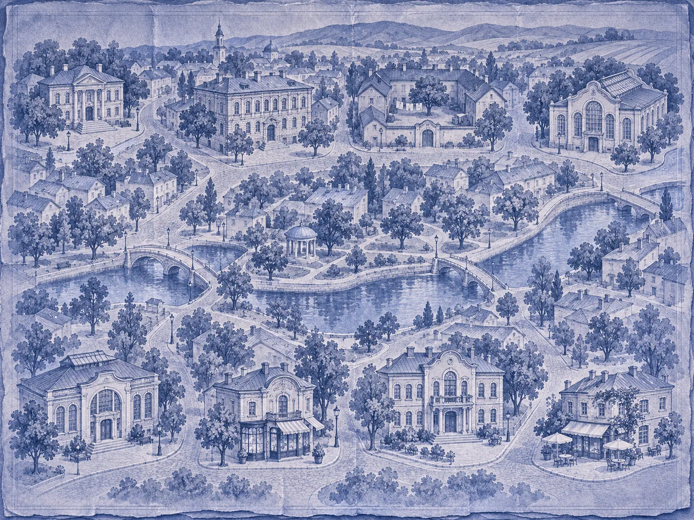
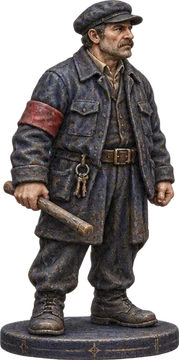

Приговор под копирку
Карты и фигурки ведущего
Игровой комплект
3 игрока · 4 игрока · 5 игроков · 6 игроков · 7 игроков · 8 игроков
Карта кампании

Поля боя


Герои


Персонажи ведущего


Противники


Сторож товарного двора 4Сторож товарного двора 3Сторож товарного двора 6Сторож товарного двора 2Сторож товарного двора 5Сторож товарного двора 1Архивный дежурный 1Архивный дежурный 3Архивный дежурный 6Архивный дежурный 4Архивный дежурный 2Архивный дежурный 5
 Упрямый посетитель 5Упрямый посетитель 4Упрямый посетитель 2Упрямый посетитель 6Упрямый посетитель 1Упрямый посетитель 3
Упрямый посетитель 5Упрямый посетитель 4Упрямый посетитель 2Упрямый посетитель 6Упрямый посетитель 1Упрямый посетитель 3